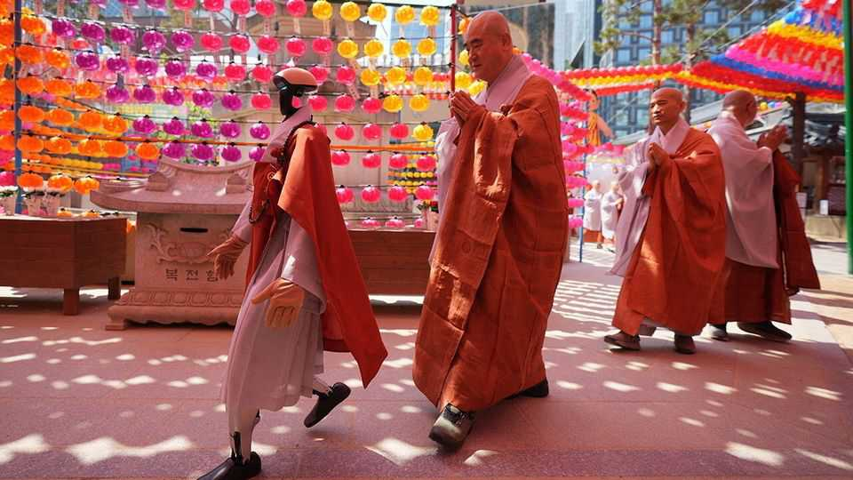

How South Korean Buddhists are trying to stay relevant
Life is suffering; the Buddha can help
July 9th 2026

A ROBOT MONK trundles across the exhibition hall of the Korean Buddhism Culture Expo in the city of Daegu. The humanoid, called Gabi, was unveiled in May and has since generated a new buzz about an ancient religion. Buddhists in South Korea have recently been trying to appear less old-fashioned, says Bae Ji-yun, a 26-year-old attending the expo and sifting through T-shirts bearing slogans such as “Shut up and meditate”. Their efforts seem to be paying off. The event used to draw mainly Buddhists, but it increasingly attracts casual shoppers too. A similar expo this year in Seoul, the capital, drew a quarter of a million visitors, mostly youngsters.
Gloomy young Koreans are drawn to Buddhism. Young adults report that life is increasingly stressful and competitive. The number of young who are economically inactive is said to have nearly tripled since 2004. Buddhism, which views suffering as an unavoidable feature of life and strives to rise above it, offers them some comfort. The religion generates faith in oneself rather than in a deity, says Kim Su-jin, a 25-year-old who recently trekked to a temple in search of inner peace. Buddhism remains the religion viewed most favourably by secular Koreans, a recent poll shows. Books about mindfulness such as “Life Hacks from the Buddha” are bestsellers. Last year temples hosted a record number of overnight guests.
Buddhist leaders hope the interest will revitalise their fading religion. South Koreans, especially young ones, are becoming less religious overall. The number of practising Buddhists is shrinking. Fewer new monks join monasteries: ordinations within the Jogye order, the largest in South Korea, have dropped to less than a third of their level two decades ago.
Last year, the Association of Buddhist Orders in Korea convened to discuss Buddhism’s survival in the country. The latest challenge is to arouse lasting engagement while remaining uncoercive—one of Buddhism’s key selling points.
To appeal to younger people, Buddhist orders are these days throwing dance parties and meditation festivals. Some temples even host matchmaking events for singles. These aren’t gimmicks, says the Venerable Seo One of the Jikjisa Temple, one of the Koreas’ oldest, dating back to the fifth century. Buddhism, she says, has always embraced “an unorthodox culture that transcends class and age”. Others fear the religion is being cherry-picked. “The core beliefs may get lost,” worries the Venerable Il Hwa of the Cultural Corps of Korean Buddhism.
It may be so. Hipster brands sell merch and preach the importance of inner wellbeing. One brand, Haetal Company, prints Buddhism-inspired memes on mugs and plastic key-chains. “I have always found Buddhism incredibly fun and cool,” says Ju Yeo-jin, its founder. The knick-knacks may not be a path to true enlightenment, but at least they are lifting spirits. ■
For exclusive coverage of Asian politics, economics and security, sign up to Asia Bulletin, our weekly subscriber-only newsletter.